개요
- LiDAR로 입주 때와 퇴거 때 방을 3D로 스캔하고, 서버가 찾은 하자를 비교·관리하는 iOS 앱 (App Store 출시)
- 하자별 예상 수리비, 자가 수리 안내, 주변 수리업체 문의까지 연결
- 2026 한이음 드림업(ICT 멘토링) 프로젝트, 창의도전형 동상 수상 (Team 404)
- 담당: 3D 뷰어 · 하자 점검 · 내방비교 · 수리 견적
- 프로젝트 발표와 시연 시나리오 작성 담당
화면
하자 점검
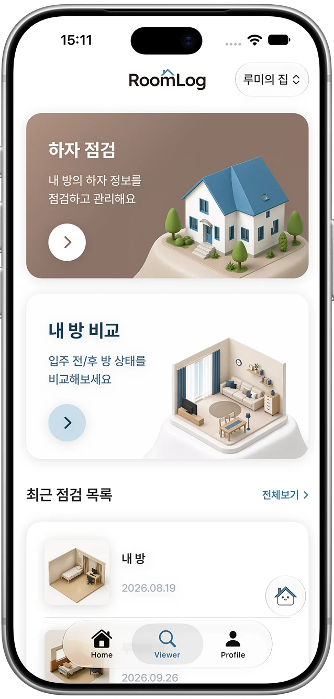
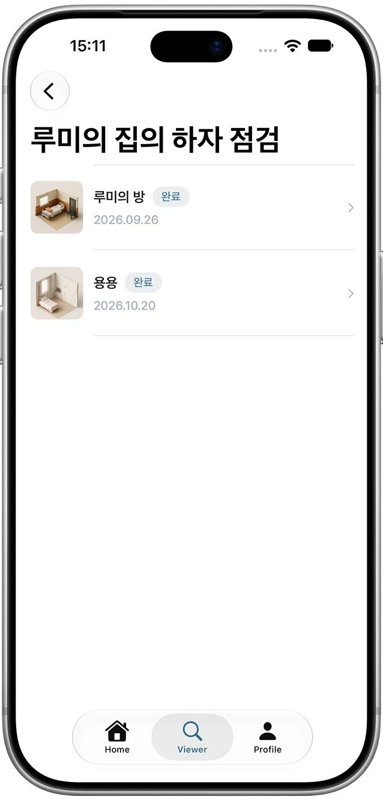
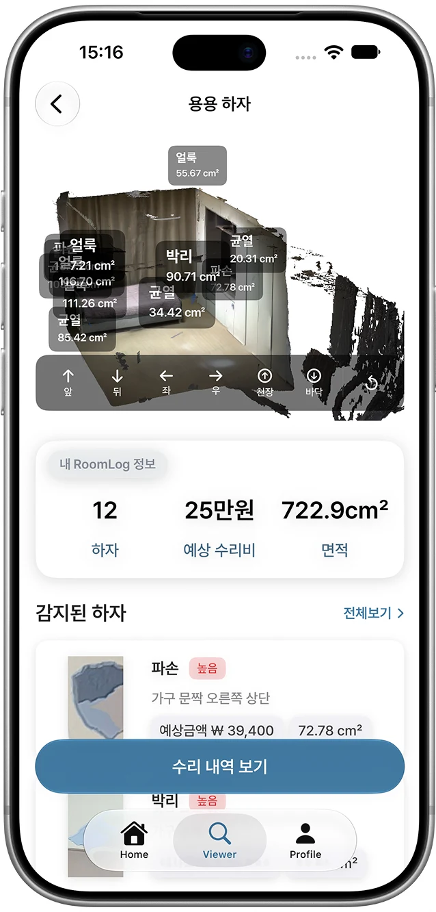
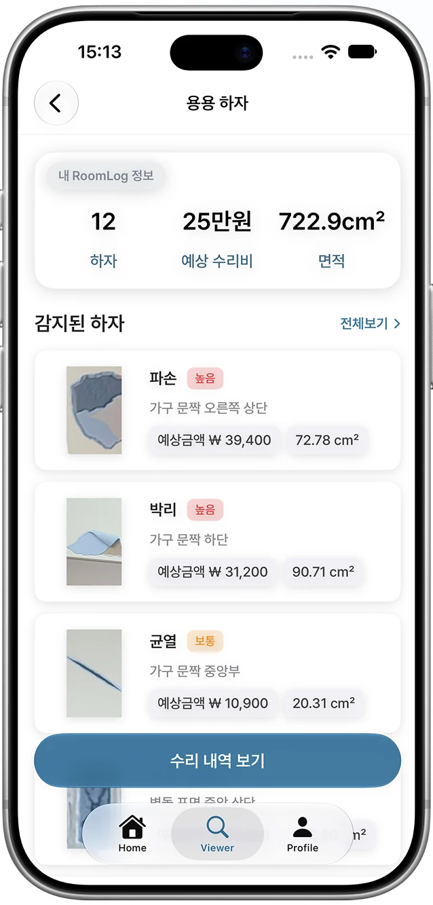
내방비교
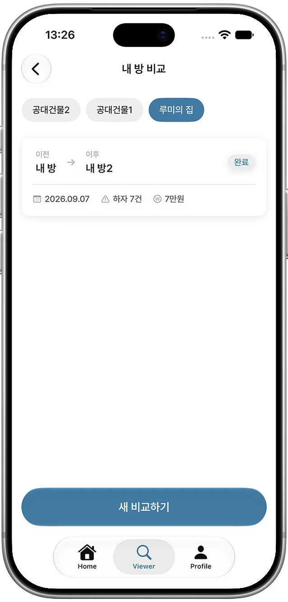
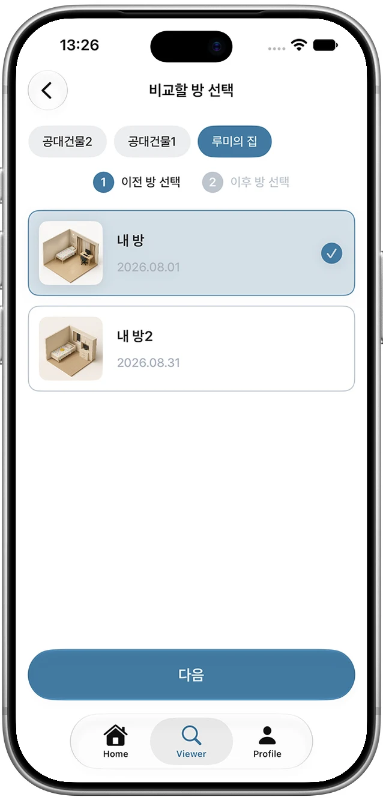
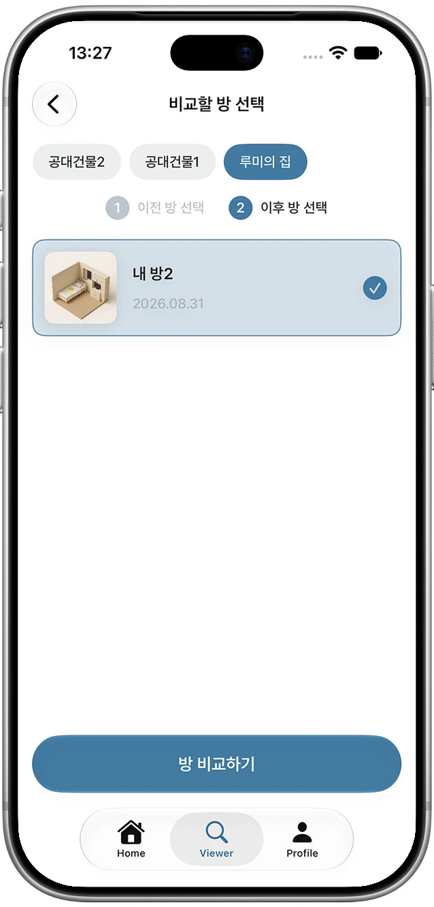
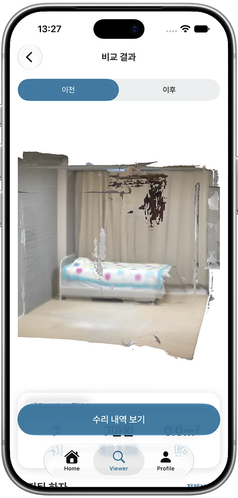
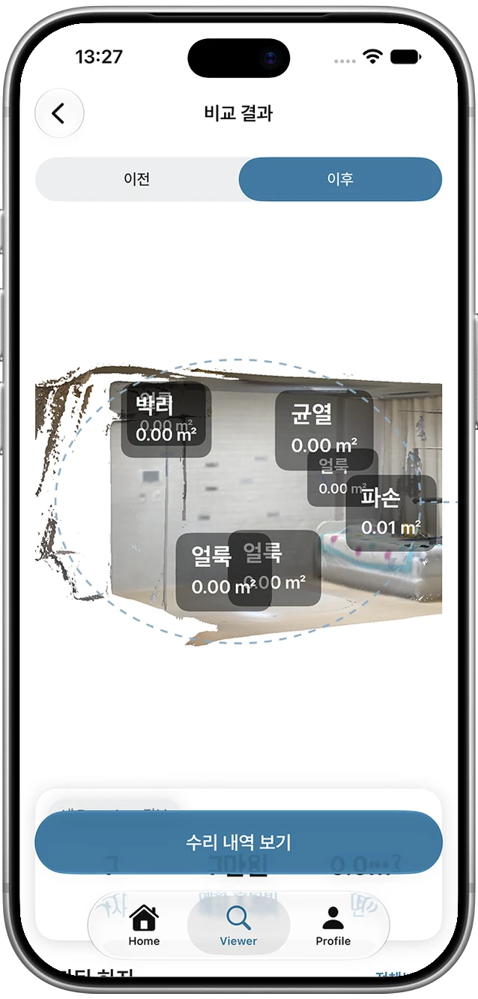
하자 상세 · 자가 수리 · 수리업체
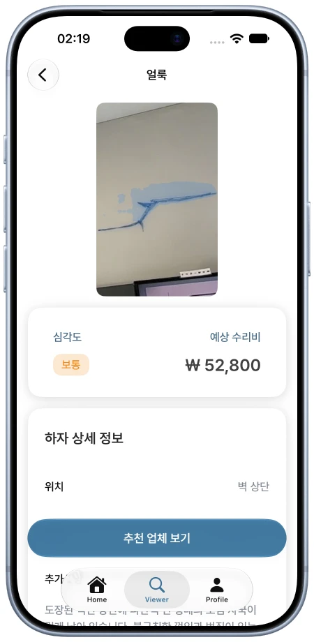
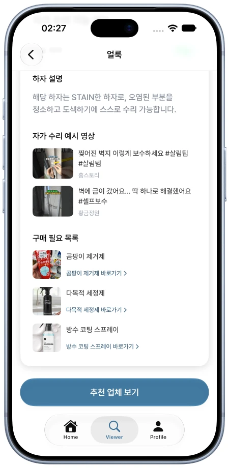
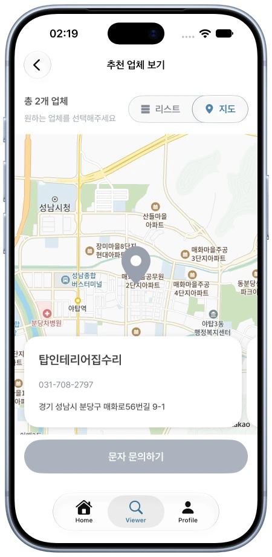
기술 스택
Swift 6SwiftUISceneKitSwift ConcurrencyObservationMoyaKakaoMapsSDKGitHub Actions
역할
하자 점검
- DTO → Repository → UseCase → Provider → ViewModel 순서로 Clean Architecture 계층 구성
- API가 나오기 전에는 Mock Repository로 화면부터 개발, 이후 실제 API로 교체
- 하자 유형·심각도·예상 수리비 표시, 자가 수리 가이드 API 연동과 카드 UI 구현
3D 뷰어 · 하자 마커
- SceneKit으로 PLY 방 모델을 띄우고 하자 위치에 영역과 마커 표시
- 하자를 누르면 해당 위치로 카메라 이동, 방향 조작 바와 초기화 버튼 추가
- 마커를 SCNText 대신 UIImage 텍스처로 바꿔 렌더링 안정화, 하자 이름과 면적 2줄 표시
내방비교
- 입주 전·퇴거 후 스캔 선택 → AI 분석 요청 → 결과·내역 조회 API 연동
- 분석 진행 중 폴링 상태 표시, 중복 분석 요청 방지
- 결과 화면에서 입주 전/퇴거 후 3D 모델 전환
수리 견적
- KakaoMapsSDK로 추천 수리업체 지도·목록 표시
- 문의 내용을 SMS 작성 화면으로 연결, 수리 내역에 실제 수리비와 메모 기록
성능 개선
3D 화면 재진입이 느림
- PLY 파일 파싱(MDLAsset → SCNScene)이 메인 스레드에서 돌아 화면이 몇 초씩 멈춤
- 파싱을 백그라운드 Task로 옮기고, 파싱된 씬을 NSCache에 보관 (비교 화면이 2개를 동시에 써서 최대 3개 유지)
- 캐시 키에 파일 수정 시각을 넣어 파일이 바뀌면 자동으로 다시 파싱
스캔 ID와 방 ID 캐시 키 불일치
- 방 생성 전에는 scanId, 생성 후에는 roomId로 PLY 캐시를 찾아서 이미 받은 파일을 다시 다운로드
- 방 생성 API가 roomId를 돌려주게 바꾸고, 캐시 파일을 새 키로 옮기는 rekey 추가
- 원격 URL을 같이 저장해 재분석으로 파일이 바뀌면 새로 받도록 처리
트러블슈팅
집을 빠르게 바꾸면 이전 집 목록이 표시됨
- 집 A → B로 바로 바꾸면 늦게 도착한 A의 방 목록 응답이 B 화면을 덮어씀
- 이전 요청 Task를 취소하고, 응답이 왔을 때 선택된 집이 그대로인지 확인한 뒤 반영
- 비교 내역 목록에도 같은 방식 적용
CI 빌드 실패
- GitHub Actions에서 SPM 캐시가 손상돼 빌드 실패
- SPM 저장소 캐시를 지우는 단계를 캐시 복원 전에 추가
시트 저장 시 컴파일러 크래시
- 집·방 수정 시트의 async onSave 클로저에서 컴파일러가 만든 thunk가 크래시
- 클로저 타입에 @MainActor를 명시해 우회